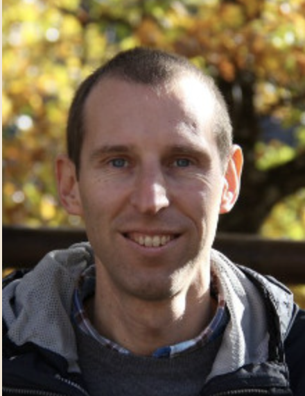
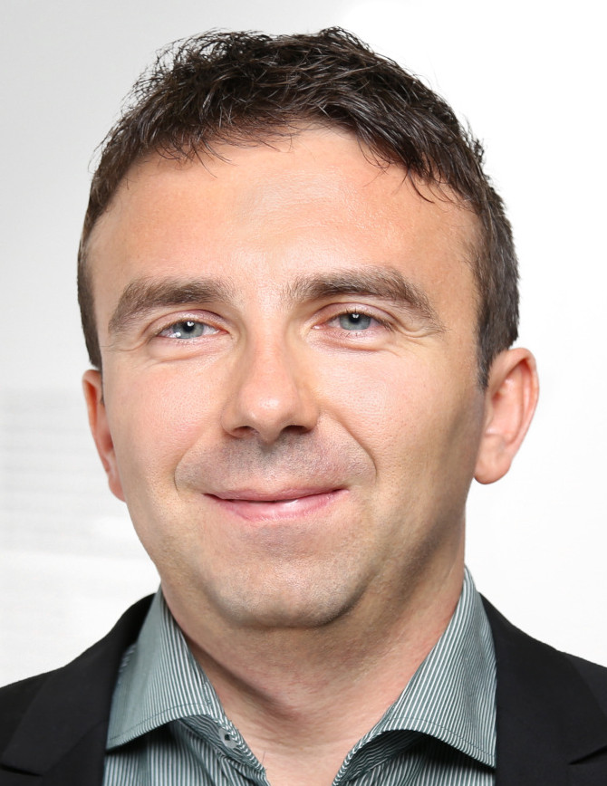
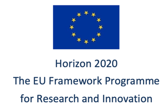
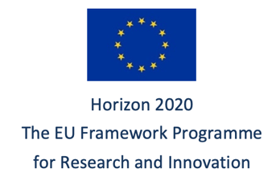

2021 IEEE SPS Cycle 2 School on
Networked Federated Learning: Theory, Algorithms and Applications
This school teaches theoretic underpinnings and practical algorithms for networked federated learning (FL). Networked FL provides tailored (personalized) models for local datasets that are related by some complex network structure. Such networked data arises in several important application domains such as pandemics or the industrial internet of things.
Prerequisites:
basic knowledge in programming with Python: flow control, functions, numpy-arrays
linear algebra: vectors, matrices, eigenvalues
Learning Outcomes:
After completing the school, participants
are familiar with the concept of regularized empirical risk minimization (RERM)
understand the principle of gradient descent for solving RERM
can implement basic ML methods in Python
can use graphs to represent networked data and ML models
can apply and critically evaluate FL methods
Tentative Schedule
Each day consists of lectures and exercises.
| Mo. 28.03. | Tue. 29.03. | Wed. 30.03. | Th. 31.03. | Fr. 01.04. |
| Machine Learning | Networks | Basic FL | Clustered FL | Trustworthy FL |
| Data, Model, Loss | Graphs and their Matrices | Networked Data | Networked Models | Privacy-Preservation |
| Linear and Logistic Regression | Spectrum of Laplacian | Centralized FL | Total Variation Minimization | Explainability |
| Gradient-Based Learning | Cluster Structure | Gossip, Consensus | Distributed SGD | Legal Aspects |
Guest Lectures
|  | Prof. Konstantin Avratchenkov Lecture: Basics of spectral graph theory Date and Time: Tue., 29.03.2022 at 11:00 (local Helsinki time) zoom link: TBA |
|  | Dr. Wojciech Samek Lecture: Towards Communication-Efficient and Personalized Federated Learning Date and Time: Thu., 31.03.2022 at 13:00 - 14:00 (local Helsinki time) zoom link: TBA |
Prof. Carlo Fischione Lecture: Communication-computation Efficient Distributed Machine Learning Date and Time: Thu., 31.03.2022 at 14:30 - 15:30 (local Helsinki time) zoom link: TBA |
References
S. Boyd, N. Parikh, E. Chu, B. Peleato, and J. Eckstein, “Distributed Optimization and Statistical Learning via the Alternating Direction Method of Multipliers,” Foundations and Trends in Machine Learning, 3(1):1–122, 2011. weblink.
D. A. Spielman, “Spectral and Algebraic Graph Theory,” Incomplete Draft, Yale University, 2019 weblink.
K. Avrachenkov, L. Cottatellucci, A. Kadavankandy. Spectral Properties of Random Matrices for Stochastic Block Model. Report RR-8703, INRIA Sophia-Antipolis, France; 2015; weblink.
A. Jung, “Federated Learning Over Networks for Pandemics,” LiveProject, Manning Publishers, 2021 weblink.
Cui, S., Hero, III, A., Luo, Z., & Moura, J. (Eds.). (2016). Big Data over Networks. Cambridge: Cambridge University Press. doi:10.1017/CBO9781316162750
A. Jung, “Machine Learning: The Basics,” Springer, Singapore, 2022. draft.
Organizing Committee:
Registration:
Click here for a free registration.
Acknowledgment
This seasonal school is supported by the IEEE Signal Processing Society and the Department of Computer Science at Aalto University. The school is also supported by the TalTech Industrial project. TalTech Industrial has received funding from the European Union’s Horizon 2020 research and innovation programme under grant agreement No 952410. We also acknowledge support received from the Academy of Finland, via the project ‘‘Intelligent Techniques in Condition Monitoring of Electromechanical Energy Conversion Systems,’’ (decision number 331197).

 
